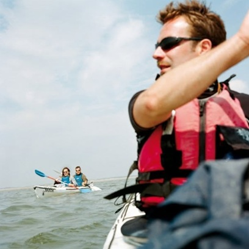
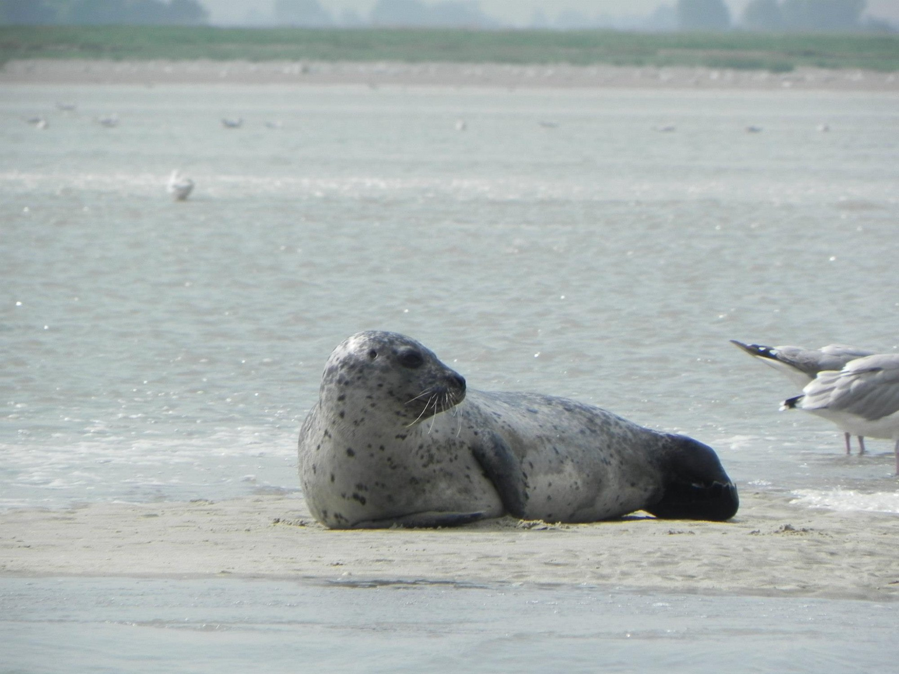
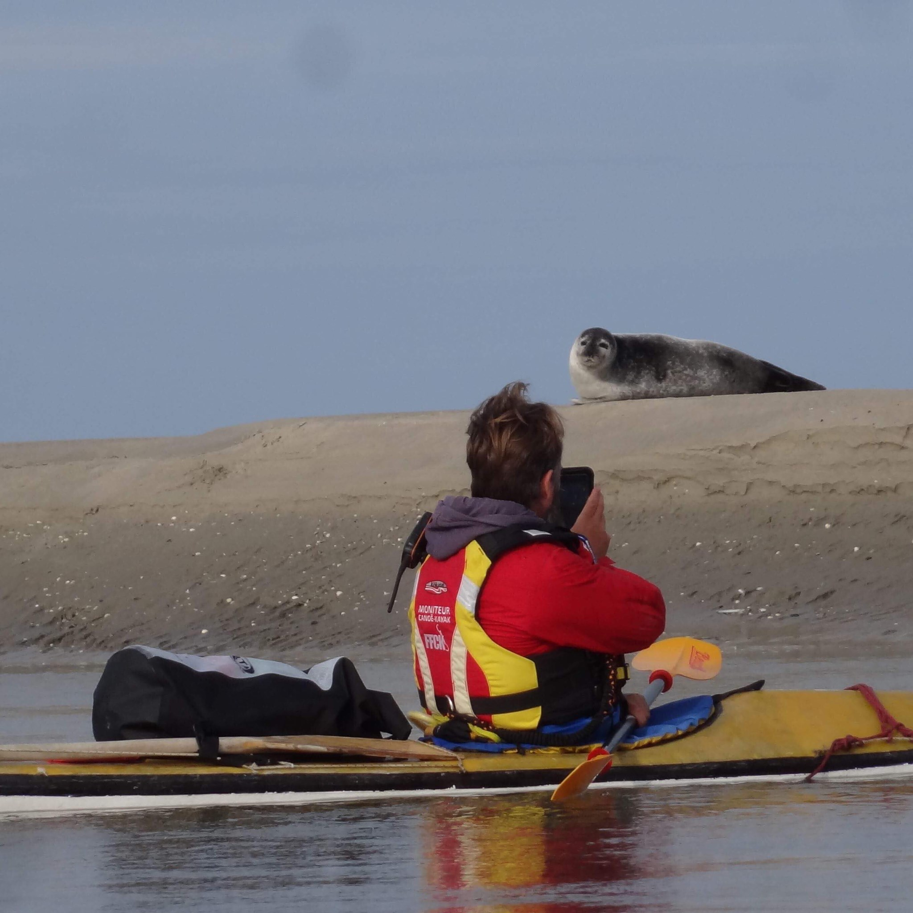
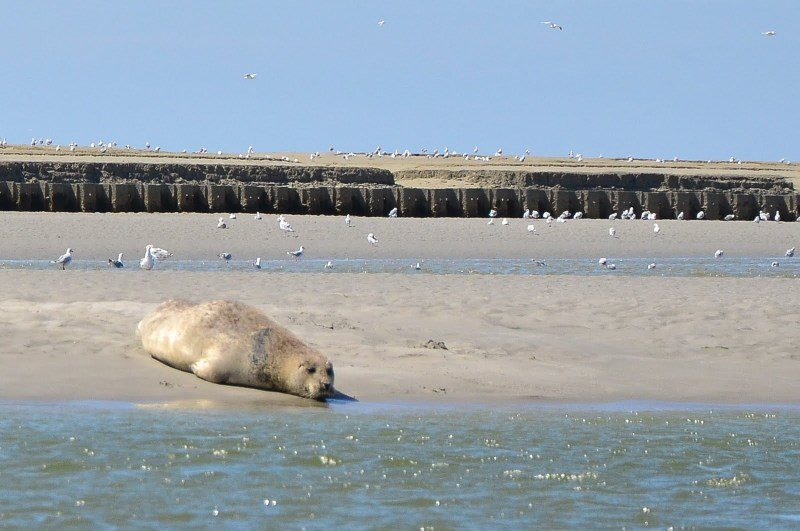

Baie de Somme · Picardie Maritime
Randonnées privées en kayak de mer · Phoques, prés salés & grand large
Découvrir les sortiesVotre guide
Né et élevé au bord de la Baie de Somme, Matthieu Cornu connaît ces eaux comme sa poche — les courants de marée, les bancs de sable changeants, les colonies de phoques et les passages secrets des prés salés.
Guide diplômé d'État, il propose des sorties exclusivement privées, maximum deux personnes. Pas de groupe, pas de masse : juste vous, le silence de la baie, et un guide passionné à vos côtés.
Chaque sortie est adaptée à votre niveau. Débutants bienvenus — le kayak de mer, ça s'apprend vite quand on est bien accompagné.

Nos formules
Toutes nos randonnées sont privées, maximum 2 personnes, et menées par un guide diplômé d'État
⏱ 3 heures
La sortie complète en Baie de Somme. Cap sur les bancs de sable, observation des phoques, traversée des chenaux. Une expérience inoubliable au cœur d'un des plus beaux estuaires d'Europe.
Tout niveau · Personnes non-sédentaires · Matériel inclus
⏱ 2 heures
Une escapade dans les prés salés, ce labyrinthe de chenaux bordé de végétation sauvage. Une découverte intimiste au rythme des marées, ouverte à tous niveaux.
Tout niveau · Personnes non-sédentaires · Matériel inclus
⏱ 2 heures
Une escapade au milieu des bancs de sable via le fleuve qui se fraye un chemin. Ambiance "On a marché sur la lune! Et navigué aussi!"
Tout niveau · Personnes non-sédentaires · Matériel inclus
Quelques consignes
Tout le matériel est fourni et entretenu. Vous n'avez besoin de rien, si ce n'est de l'envie d'explorer.
La Baie de Somme



Réservation
Les sorties se font sur réservation uniquement. Contactez Matthieu pour vérifier les disponibilités et choisir votre créneau selon les marées.